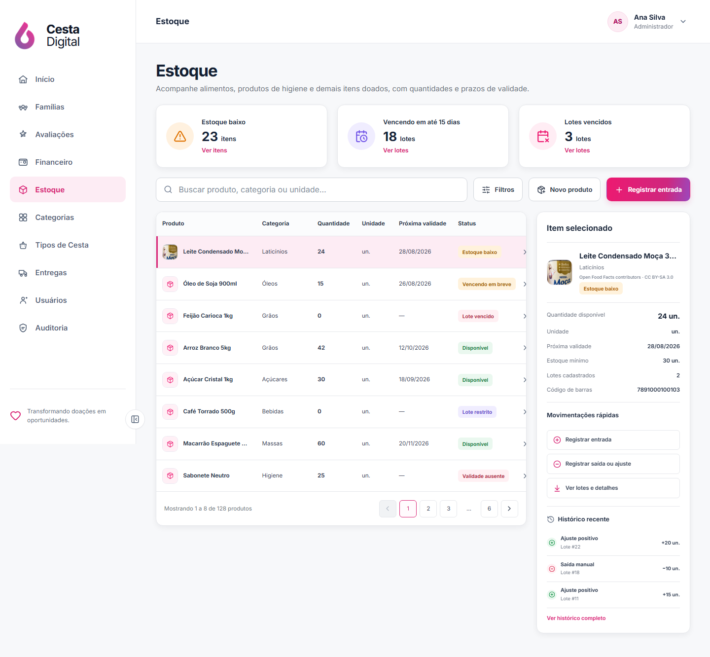
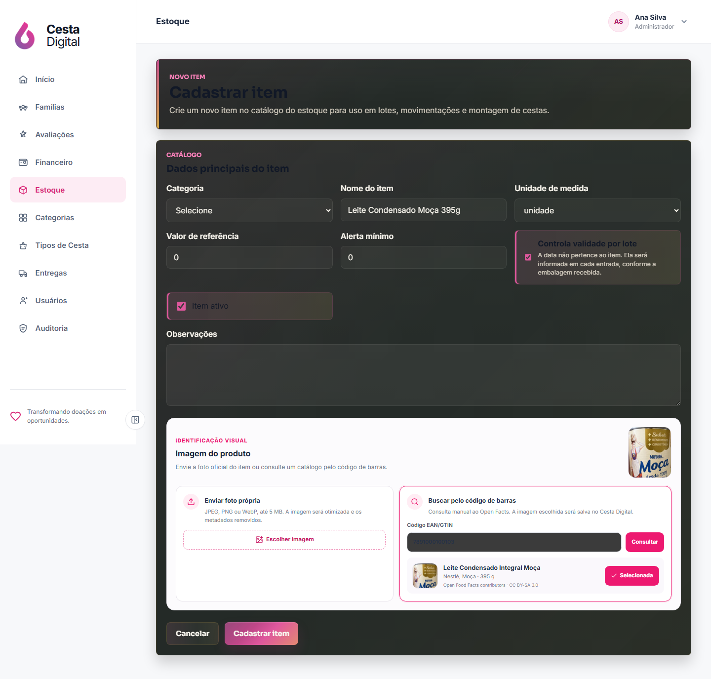
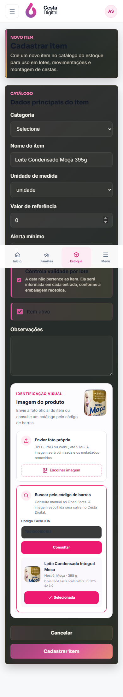
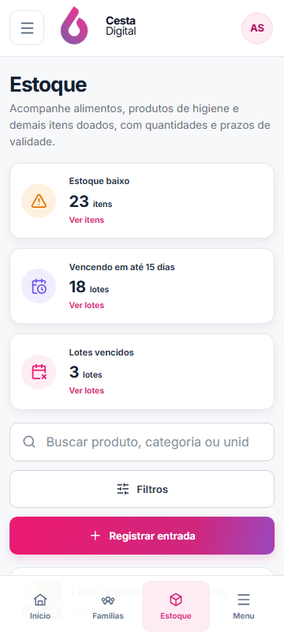
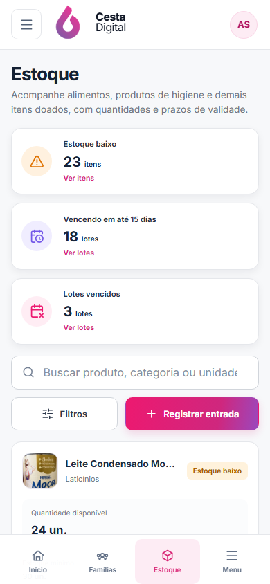
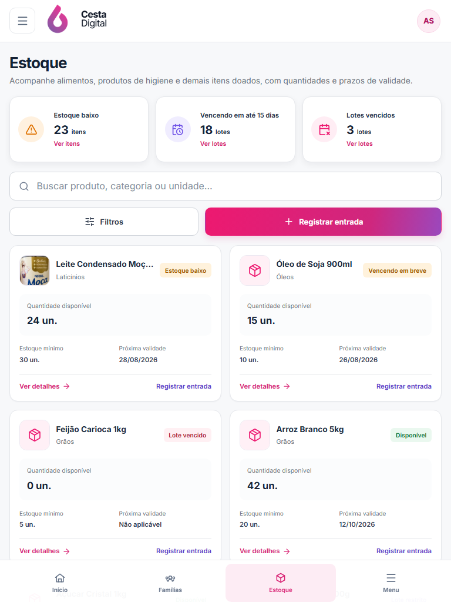

V2-08B/C · Estoque
Comparação da direção aprovada com a visão operacional real e a nova identificação visual dos produtos.
Aprovado em 21/08/2026Referência × implementação
Clique em qualquer imagem para abrir a captura original em uma nova aba.


Imagens de produto
Upload próprio e consulta assistida por código de barras, sem importação automática. A foto escolhida fica salva no Cesta Digital.


Composição responsiva
Desktop mantém sidebar, tabela e painel contextual; tablet e mobile recebem cards próprios e a aba Estoque ativa.



Fluxo de decisão
O operador informa um EAN/GTIN válido ou envia uma imagem JPEG, PNG ou WebP de até 5 MB.
A consulta mostra nome, marca, quantidade, foto e atribuição antes de qualquer vínculo.
Somente a foto selecionada é otimizada, copiada para o sistema e auditada junto do produto.
Fidelidade funcional
A lista não depende de serviço externo. Imagens importadas são armazenadas localmente, versionadas e servidas pelo backend.
Produto sem foto, falha de carregamento ou catálogo sem imagem mantém o ícone neutro; a operação nunca fica bloqueada.
Formato, tamanho, dimensões e origem são validados; metadados são removidos e a saída é normalizada para WebP.
Fotos externas mantêm origem e atribuição visíveis. O exemplo de homologação usa Open Food Facts, sob CC BY-SA 3.0.